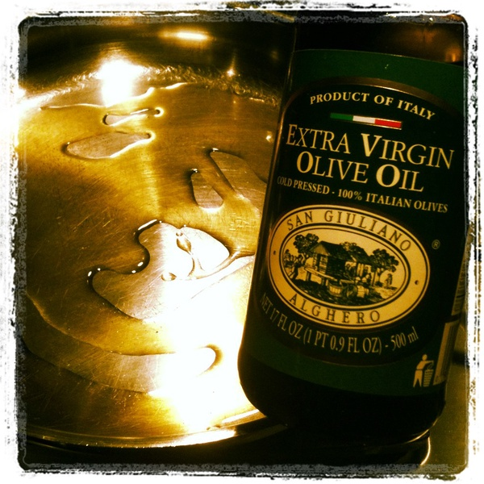

Olive oil is very nice, and I enjoy consuming it. So I am making a webpage about it.
Olive Oil is my best friend in the kitchen there are so many uses for it.
I believe it does not get the appreciation it deserves, and so I made a website for it.
It's one of those ingredients that plays nice with others, but can also be strong on its own.
There are very few things that are better than dipping some nice freshly baked bread with butter into some olive oil.
It is truly a great taste.
I have a great love and respect for this amazing invention, and hopefully you will too.